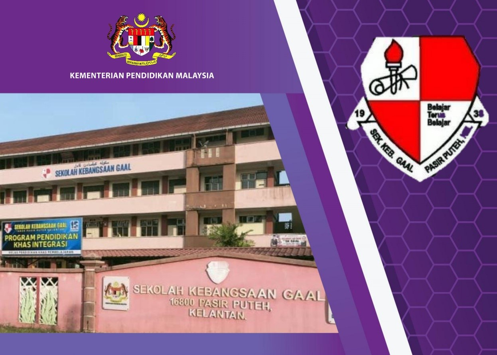
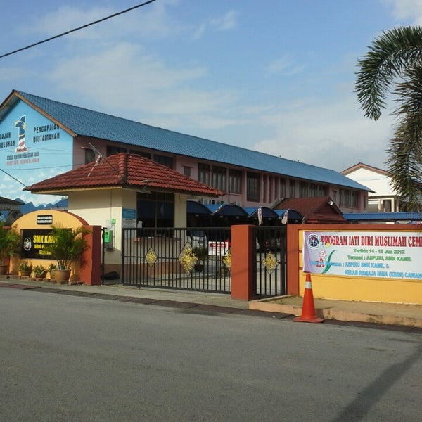

SEKOLAH KEBANGSAAN GAAL
Sekolah Kebangsaan Gaal is a primary school located in Kampung Gaal Pasir Puteh Kelantan. Since 2009, I started attending this school starting in year 1. At the end of 2014, my struggle as a primary school student ended when year 6 was ended with the 5A result for UPSR examination.

SEKOLAH MENENGAH KEBANGSAAN KAMIL
Sekolah Menengah Kebangsaan Kamil is an excellence cluster high school in Pasir Puteh Kelantan. This school puts a condition where only students who obtain a minimum UPSR result of 4A 1B are eligible to enter this school at that time. I attended this school from 2015 to 2019. In SPM examination I got a very excellent result which is 5A 3B 1C.
UNIVERSITI TEKNOLOGI MARA (KAMPUS MACHANG)
At UiTM Machang, I continued my diploma studies in the field of Information Management. This campus is located in Machang Kelantan. I started studying here in October 2020 and will finish at the end of February 2023.